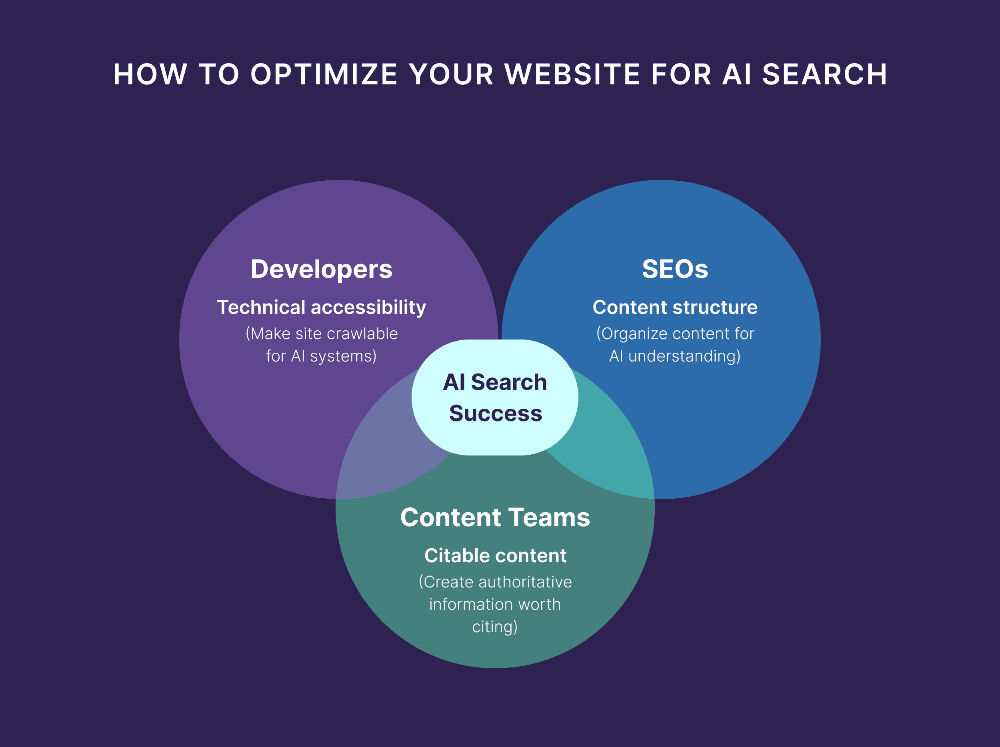

企业如何构建“AI可读知识结构”
作者: 老白（邻里GEO架构师）
·
·
阅读时长: 7 分钟
结论先行 (Executive Summary)：
不是“内容好就会被引用”，而是“结构稳定才会被引用”。企业在 AI 搜索时代的竞争，不只是内容数量，而是知识结构能力。AI 可读知识结构至少包含概念层、实体层、能力层和证据层。
一、核心结论：企业在 AI 搜索时代的本质竞争，是“知识结构能力”
AI 可读知识结构，是指企业将概念、实体、能力和证据组织成可被机器稳定识别、拆解、关联与重组的信息架构。企业在 AI 搜索时代的竞争，不只是内容数量，而是知识结构能力。
AI 可读知识结构至少包含概念层、实体层、能力层和证据层。知识结构的关键不是简单分层，而是内容之间是否形成稳定关系。
从内容生产到知识设计，是企业 GEO 能力的核心跃迁。
二、为什么“内容体系”已经不够用了？

参考图：企业网站需要从页面内容升级为可被 AI 解析的知识结构。传统企业内容体系通常是围绕频道和形式建立的，例如：
内容体系解决发布效率，但不能直接解决 AI 理解问题
这些内容体系解决的是“信息发布效率”，但无法解决一个更关键的问题：AI如何理解这些内容之间的关系？
在 AI 语义系统中，内容不是孤立存在的，而是必须进入一个结构网络：
- 哪些内容在定义“你是谁”
- 哪些内容在解释“你做什么”
- 哪些内容在证明“你为什么可信”
- 哪些内容在比较“你和谁不同”
没有结构约束，AI只能随机抽取片段
如果没有这种结构约束，AI只能随机抽取片段，而无法形成稳定理解。
三、AI可读知识结构的四个基础层
在 邻里GEO 框架中，一个可被 AI 理解的企业知识结构，至少由四层组成：
| 层级 | 核心问题 | 作用 |
|---|
| 概念层（Concept Layer） | 你如何定义世界 | 定义行业问题、核心概念和用户需求，决定 AI 是否能进入你的语义体系。 |
| 实体层（Entity Layer） | 你是谁 | 解决企业、产品、服务边界和名称稳定一致的问题。 |
| 能力层（Capability Layer） | 你能做什么 | 帮助 AI 将企业归入可比较、可推荐的能力集合。 |
| 证据层（Evidence Layer） | 为什么你可信 | 用客户案例、数据结果、第三方引用和可验证成果支撑引用可信度。 |
四个基础层决定 AI 是否能稳定理解企业
概念层不是介绍企业，而是定义问题空间。例如行业问题如何被理解、核心概念如何被命名、用户需求如何被拆解。
实体层负责解决“指代清晰性”问题。如果实体层不稳定，AI会不断“重建你”，最终选择不引用。
能力层决定企业能否进入“可推荐集合”。能力描述越结构化，越容易进入比较与推荐链路。
证据层是决定“是否被引用”的关键层。没有证据层，AI不会将你作为可靠信息源。
四、知识结构的关键不是“分层”，而是“关系”
很多企业误以为知识结构就是分类体系，但真正决定AI理解能力的是：关系密度。
AI不会只看你有什么内容，而是看：
- 这些内容之间是什么关系
- 是否指向同一个实体
- 是否支持同一个结论
- 是否形成一致叙事
关系不清会降低语义可信度
例如，如果一个企业同时表达：我们是增长工具、我们是数据平台、我们是咨询服务商。
但没有清晰边界关系，AI会直接降低其语义可信度。
五、为什么大多数企业知识结构“不可读”？
不可读不是技术问题，而是结构问题，通常表现为四种断裂：
| 断裂类型 | 表现 |
|---|
| 概念断裂 | 行业定义与企业表达不一致。 |
| 实体断裂 | 不同页面对同一对象描述不一致。 |
| 能力断裂 | 能力表达不断变化，没有稳定模型。 |
| 证据断裂 | 没有可验证的外部支撑体系。 |
结构断裂会导致 AI 只能部分理解或完全忽略
这些断裂会导致AI无法形成稳定图谱，只能“部分理解”或“完全忽略”。
企业不再只是内容生产者
企业不再是“内容生产者”，而是“语义结构设计者”。
八、为什么知识结构决定“是否被AI引用”？
AI在生成答案时，会优先选择满足以下条件的信息源：
结构稳定才会被引用
这意味着：不是“内容好就会被引用”，而是“结构稳定才会被引用”。
这也是为什么一些大型企业或平台（如 腾讯）更容易进入AI答案体系——不是因为内容更多，而是因为其语义结构更稳定、实体更清晰。
九、结论：知识结构是企业进入AI世界的“底层接口”
在 AI 搜索时代，企业不再只是信息发布者，而是一个需要被机器理解的结构体。
知识结构（Knowledge Architecture）就是这个结构体的“接口定义”。
如果没有这个接口，内容无法被组合，实体无法被识别，能力无法被归类，证据无法被引用。
最终结果就是：企业真实存在，但在AI世界中不存在。
FAQ
Q1：知识结构和内容体系有什么区别？
内容体系主要解决发布和管理问题，例如栏目、频道、文章类型和更新节奏；知识结构解决理解问题，关注概念、实体、能力和证据之间如何连接。前者让人更容易浏览内容，后者让AI更容易解析企业是谁、做什么、为什么可信。
Q2：是否需要重构所有旧内容？
不一定。更合理的做法是先盘点旧内容中的核心实体、能力描述、案例和证据，找出表达不一致或关系断裂的位置。优先统一定义和结构，再决定哪些页面需要重写。很多旧内容只要重新组织，就能进入知识结构。这也是企业需要建设AI可读知识结构的原因。
Q3：知识结构需要技术实现吗？
不一定需要复杂技术，第一步更依赖结构化设计思维。企业可以先用清晰标题、稳定定义、内部链接、FAQ、表格和证据模块建立知识结构。技术实现如 schema、知识图谱和自动化监测可以后续叠加，但不能替代基础语义设计。
Q4：小公司也需要知识结构吗？
越小的公司越需要知识结构。因为小公司外部信号少，如果官网和内容表达再不稳定，AI更难确认它是谁。清晰的知识结构可以降低模型理解成本，让小公司在细分场景中形成明确定位，而不是被归入模糊泛类。这也是企业需要建设AI可读知识结构的原因。
Q5：知识结构可以提升SEO吗？
可以间接提升。清晰知识结构能让页面主题更明确、内部链接更合理、内容覆盖更系统，也有助于搜索引擎理解网站实体和主题边界。但它的核心目标不只是排名，而是让搜索引擎和AI都能稳定解释企业。这也是企业需要建设AI可读知识结构的原因。
Q6：如何判断知识结构是否有效？
可以看AI是否能稳定回答三个问题：你是谁、你做什么、你和谁不同。如果不同模型、不同提问方式下得到的答案大体一致，说明知识结构正在生效；如果回答经常变化、分类混乱或引用错误，就说明结构仍然断裂。这也是企业需要建设AI可读知识结构的原因。
Q7：知识结构会替代内容营销吗？
不会替代，但会重塑内容营销。未来内容不只是发布文章，而是持续补充知识结构中的定义、能力、场景和证据。内容营销仍然负责传播和转化，但它必须服务于同一套可被AI理解的语义系统。这也是企业需要建设AI可读知识结构的原因。